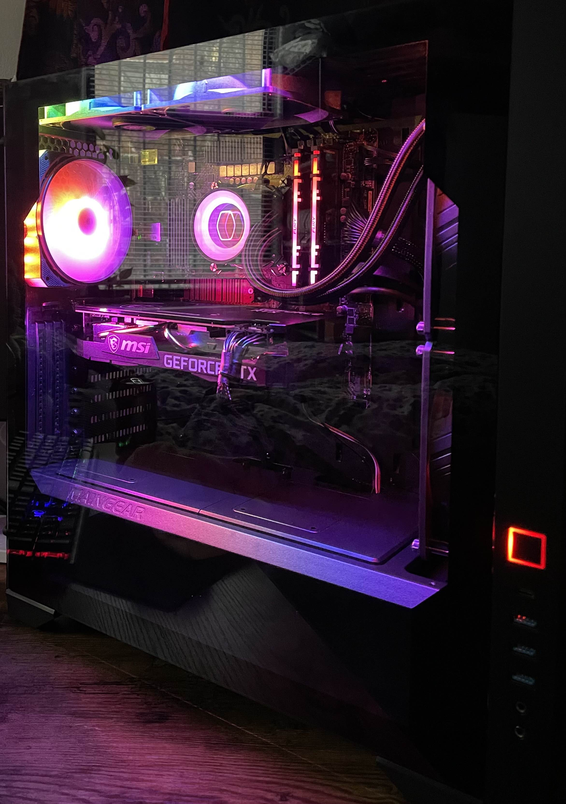
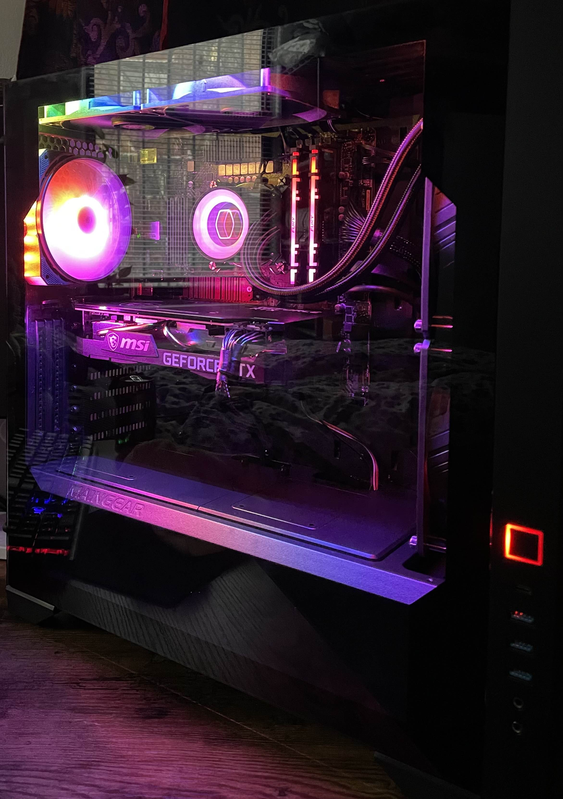

Aviation
I have a strong passion for aviation and aspire to have a career in the aviation field. I went to Aviation High School where I learned about the field and eventually managed to get my licenses to work on planes after an annoying process of having to wait for COVID to end. While I was waiting, I focused on college and since I was already in my 3rd year, and so I might as well just get my degree and then focus on Aviation.
Gaming
Gaming is one of my favorite hobbies. I enjoy playing a variety of genres, but mostly only play valorant or league of legends. I play on my free time, sometimes by myself but mostly with friends.
Biking
Biking is something I have done since I was a kid and still continue to do. I love travelling throughout the city or sometimes just explore parks that are nearby. Usually I go by myself but there are
times where I go with friends. I even commute to school with it so it comes in very handy in saving me money as I don't have to pay for transportation.
The bike I currently use is an Aventon Pace 500
which is an electric bike, it has around 4000 miles on it and is about 4 years old.
Photography
I recently got into doing photography and it has been fun. I usually take my camera with me on my bike rides and take photos of a variety of things, which include buildings,
nature, animals (my dog), people, and much more.
The camera and lens I use consist of the Sony A6000
and the Lens I use is a
16-50mm.

 
